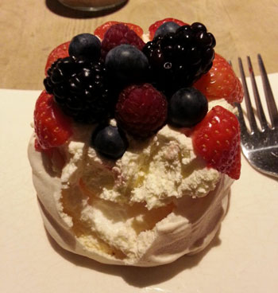
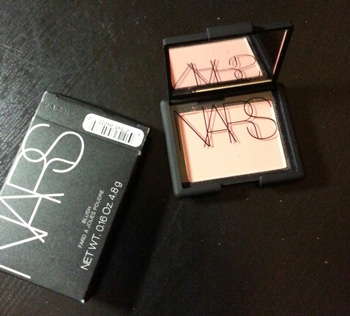
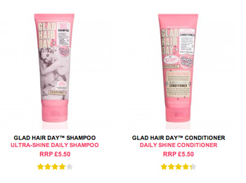

Selfridges 정문사진
매번 리젠트스트릿쪽에서 죽죽 올라와서
(사람많은곳피해) 뒷골목으로 가서 안에들어가기때문에
정문은 실로 오랜만에 본다 ^^;;;;
Destination Christmas래 ㅋㅋㅋ
1.
그리고 난 크리스마스 쇼핑 아직 제대로 시작도 몬했다;;
작년이랑 비슷하군 ㅡㅡ;;
또다시 주말에 센트럴을 헤매고 다닐듯;;;;
2.
그간 내방 침대랑 싸우느라...;;;;
방에있는 침대 프레임이 넘 거지같아서
집주인에게 침대교체해달라 / 가능하면
난 공간을 넓게쓰고싶으니까 싱글베드로
- 가 내가 요구한거
하지만 처음에는 둘다 몬해준단다 ㅡㅡ;;
그냥 자기돈들고 (사람고용하기에는 인건비가 비싸니)
자기 노동력들이는게 귀찮고 싫은거지;;
난 허리아파서 도저히 못자겠다 내가 프레임구입할테니
교체해달라고 다시이야기하니
침대프레임 해체해서 버리는거부터
모든걸 내선에서 해결하면 ㅇㅋ 라는 걸로 딜 -_-;;
급한사람은 나니까 알았다고 하구
엠군불러서 침대분해 시작
분해하는것도 전동드릴있겠다 한시간이면 되겠지
싶었는데 세시간넘게 걸렸따 ㅡㅡ;
똑같은 파츠인데 왜 어느곳은 나사가 풀리고 어느곳은 안풀리는게야;;;
게다가 해체할려고 매트리스 치우고 본 프레임상태는
그야말로 최악 ㅡㅡ;;;
보여주는 사람마다 헐;;; 어떻게하면 프레임이 이런상태가 되는겨
라는 반응;;;;
고생고생해서 전부 내다버리고 (이게토요일)
수요일날 새 프레임이 배달왔는디
이날 Primal Scream공연보구 밤11시반 귀가 -_-;;;
피곤한데 내일할까싶다가 그래도 언능 편하게 자고싶어서
오밤중에 혼자 낑낑대며 조립시작
그리고 밤12시반쯤 내가구입한 업체에서
조립나사를 5개 부족하게 보내줬다는걸 깨달았다.......OTL
설명서에는 20개 들어있다고 했는데
아무리 세어봐도 15개밖에 없어 ;ㅂ; 침대조립이 불가능해 ;ㅂ;
제대로 빡쳐서 그새벽에 분노의 멜을 토해내고
(야이생키들아 니들덕분에 난 오늘도 매트리스만 깔고잔다
더이상 바닥서 자기싫으니까 내일!!당장!!안보낸나머지파츠보내!!
를 깊은빡침이 느껴지지만 최대한 정중하게^^;;;)
그다음날 - 오늘배송하니 내일받아볼수있을거다
/ 이거 패킹한사람과 이야기하겠다 정말 미안하다 등등의 - 사과멜을 받았지만
그 하루를 못기다리는 성질급한나는
마구 인터넷검색을 해서 내가 필요한 파츠를 회사근처 철물점에가서 득템
집에가서 근성으로 침대조립 완료하고 편하게 잤다능
그런 이야기;;;;; ☞☜
3.
그외잡다한사진^^***

모양이 예뻐서 주문한 케키
ASOS에서 20%OFF 프로모션하길래 주문해본
NARS블러셔
Benefits / sugarbomb - 요걸쓰고있었는데
나름 바닥도 봤고
갑자기 이 네모네모 종이케이스 뚜껑여닫는게
굉장히 귀찮다고 느껴져서;;;; 충동구매^^;;;

이건실패 ㅜㅜ
Soap & Glory 좋아하는뎅
헤어제품은 영 내취향 아니다;;
이제 곧 클스마스연휴시작~~
= 많이잔다/오래잔다/늦게까지잔다
와~~~~XD (←;;;;)
+이렇게 써놓으면 평소에는 굉장히 빡세게
수면부족에 시달리면서 사는거같은데
그렇진 않습니다;;;;
+오늘은 털바지입은 멋진행님들 보러간다//
(Mattew Bourne's Sawn Lake ^^***)
이것으로 올해 하반기 공연스케줄 모두 끗!!